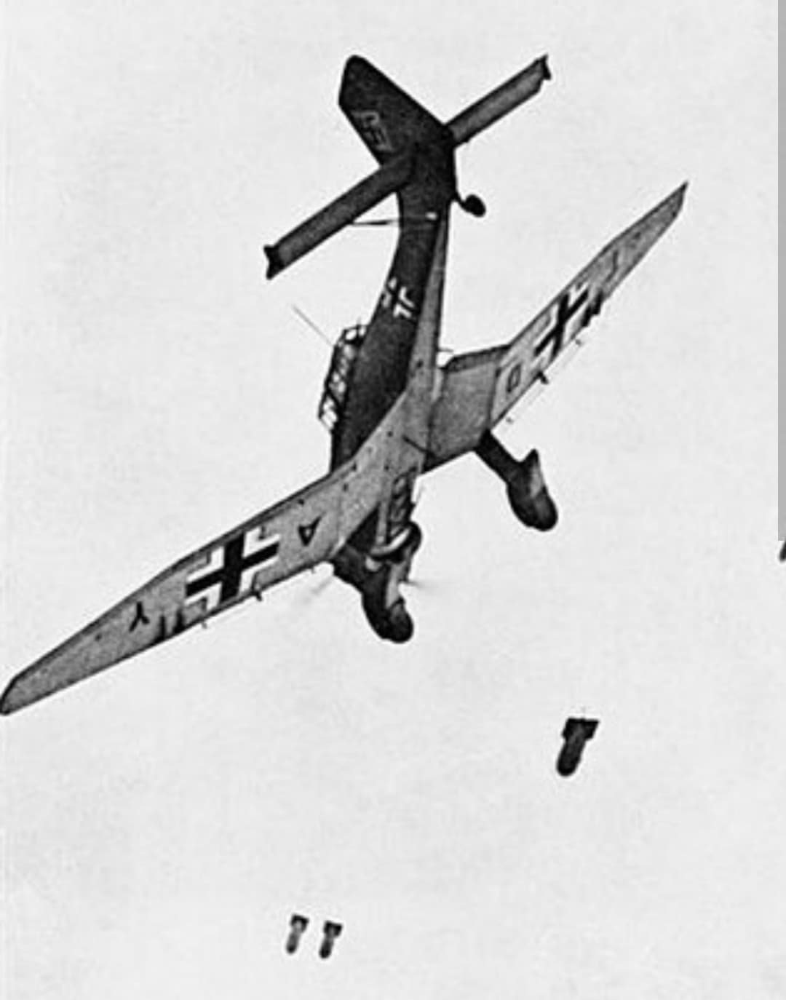
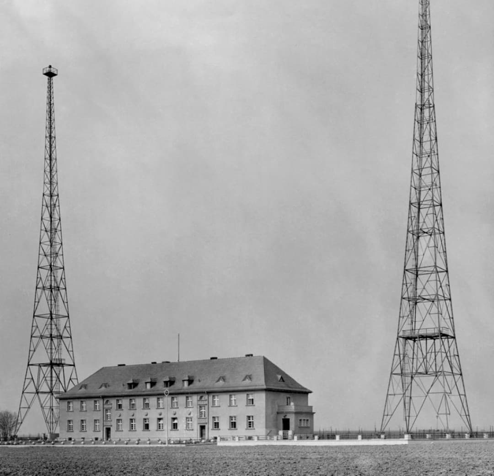
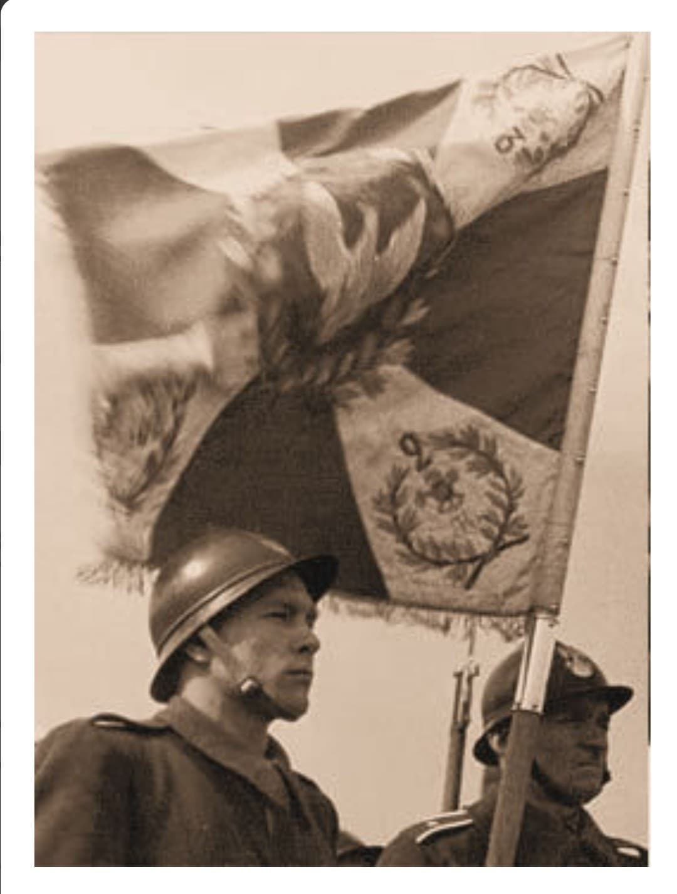
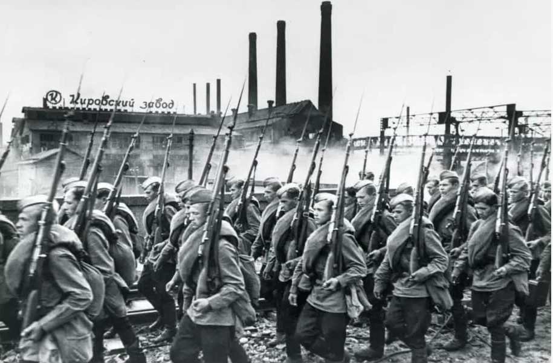
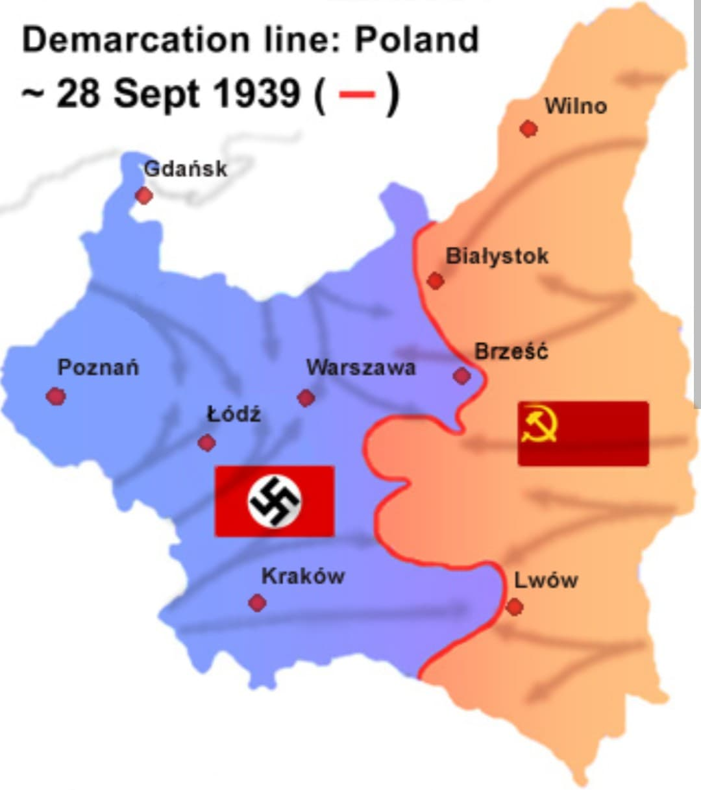
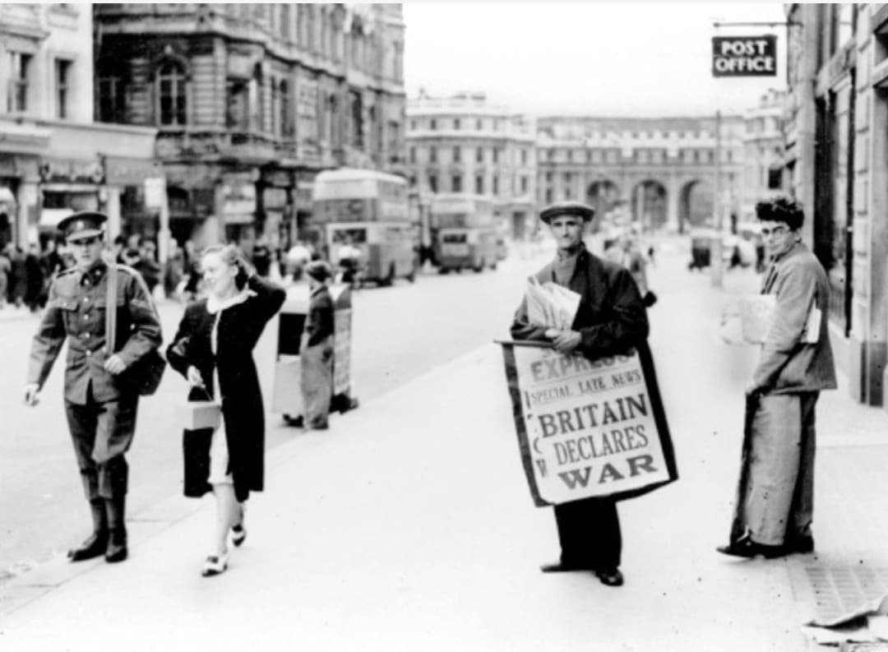

Le 1er septembre 1939, à 4 h 45, l’Allemagne envahit la Pologne. C’est l’opération Fall Weiss, première Blitzkrieg de l’histoire. Deux jours plus tard, la France et le Royaume‑Uni déclarent la guerre à l’Allemagne : la Seconde Guerre mondiale commence officiellement.

L’armée allemande combine :
La Pologne est surprise par la vitesse de l’attaque. Les communications sont détruites dès les premières heures.

Pour justifier l’invasion, Hitler organise une fausse attaque contre une station radio allemande, menée par des soldats allemands déguisés en Polonais. C’est une mise en scène destinée à présenter la Pologne comme l’agresseur.

Malgré un courage remarquable, l’armée polonaise est en infériorité :
Les Polonais réussissent néanmoins à infliger des pertes importantes à la Luftwaffe.

Conformément au pacte germano‑soviétique, l’Armée rouge envahit la Pologne par l’est. Le pays est pris en étau : Allemagne à l’ouest, URSS à l’est. La défaite devient inévitable.

Le 6 octobre 1939, la dernière unité polonaise se rend. Le pays est partagé :
La Pologne disparaît de la carte européenne.

Le 3 septembre 1939 :
L’Europe entre dans un conflit mondial qui durera six ans.
Page du Musée HOP WW2 – Section Mur de Berlin & Guerre froide